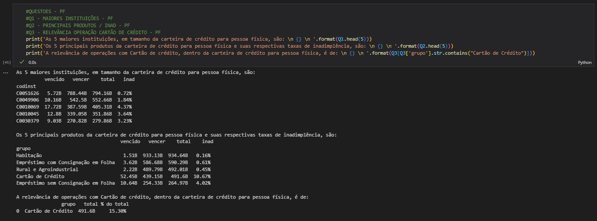
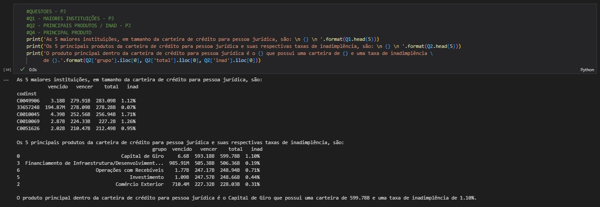

Este projeto visa aplicar os conceitos de ETL (Extract, Transform e Load) e análise de dados utilizando python, sobre os dados de crédito do portal IF.data de Conglomerados Financeiros e Instituições Independentes.
Perguntas a serem respondidas:
Neste projeto a ideia central do processo de ETL é gerar um repositorio (banco de dados) de tabelas relacionais que facilitem analises futuras. O conceito pode
ser entendido como ETL moderno para criação de Data Warehouse, ou seja, visa a criação de um banco com tabelas relacionais e estruturadas a perguntas já definidas.
Buscando projetar cada etapa, temos que:
O ponto central desta etapa é entender a documentação para acesso aos dados, fornecido pelo portal IF.data (https://olinda.bcb.gov.br/olinda/servico/IFDATA/versao/v1/documentacao#IfDataValores) e
aplicar a parametrização correta da biblioteca 'Requests' que foi a utilizada para realizar a comunicação com a API.
Relatórios extraídos:
#Extração
# definição da api-endpoint
URL = "https://olinda.bcb.gov.br/olinda/servico/IFDATA/versao/v1/odata/IfDataValores(AnoMes=@AnoMes,TipoInstituicao=@TipoInstituicao,Relatorio=@Relatorio)"
# configurando parametros obrigatórios da api
PARAMS = {
'@AnoMes': 202212, #YYYYMM
'@TipoInstituicao': 2, #Tipo de Instituição: 1 - Conglomerados Prudenciais e Instituições Independentes, 2 - Conglomerados Financeiros e Instituições Independentes, 3 - Instituições Individuais, 4 - Instituições com Operações de Câmbio
'@Relatorio': "\'11\'", # Carteira de crédito ativa Pessoa Física - modalidade e vencimento
'$format': 'json'
}
# chamando função GET e gravando resultado em um objeto
r = requests.get(url = URL, params = PARAMS)
# analisa de o método GET obteve sucesso
# em caso de erro retorna o código do erro
if r.status_code == 200:
print(r.text)
else:
print(f"Error: {r.status_code}")
r.raise_for_status()
A partir do json recebido pela etapa anterior (extração), mapeou-se as seguintes necessidades:
#Tranformação
# Transforma a resposta da API de text em dicionario, padrão json
data = r.json()
# Normaliza o json semi estruturado
# Extrai apenas o dicionario da chave 'value'
multiple_level_data = pd.json_normalize(data, record_path =['value'])
# Monta um dataframe a partir do JSON
df = pd.DataFrame.from_dict(multiple_level_data)
# Limpeza e tratamento de colunas
df2 = pd.DataFrame(df, columns= ['CodInst', 'AnoMes', 'Grupo', 'NomeColuna', 'Saldo'])
df2['NomeColuna'] = df2['NomeColuna'].str.upper()
df2['AnoMes'] = pd.to_datetime(df2['AnoMes'], format='%Y%m')
df2['Saldo'] = df2['Saldo'].round(2)
# Limpeza das linhas excedentes
df2 = df2[df2["NomeColuna"].str.contains("TOTAL") == False]
# Ajuste no nome das colunas para o script levar ao banco de dados
df2 = df2.rename(columns={'CodInst': 'codinst', 'AnoMes': 'anomes', 'Grupo': 'grupo', 'NomeColuna': 'nomecoluna', 'Saldo': 'saldo'})
Com os dados limpos e padronizados, podemos avançar e armazena-los dentro de uma estrutura para consultas futuras. Dentre as opções de armazenamento, foi utilizado duas para este projeto:
#Armazenamento
# Para armazenamento em csv - local
df2.to_csv('dados/IFDATA_PF_db.csv', sep = ';')
# Para levar informações ao postgreSQL - local
hostname = 'localhost'
database = 'dev_lucas'
username = 'postgres'
pwd = 'admin'
port_id = 5432
conn = None
cur = None
engine = create_engine('postgresql+psycopg2://' + username + ':' + pwd + '@' + hostname + '/' + database)
# Criar tabela se ela não existir no db
try:
conn = psycopg2.connect(
host = hostname,
dbname = database,
user = username,
password = pwd,
port = port_id
)
cur = conn.cursor()
create_script = ''' CREATE TABLE IF NOT EXISTS ifdata_pf (
CodInst VARCHAR NOT NULL,
AnoMes date NOT NULL,
Grupo VARCHAR NOT NULL,
NomeColuna VARCHAR NOT NULL,
Saldo float ) '''
cur.execute(create_script)
cur.close()
conn.commit()
except Exception as error:
print(error)
finally:
if cur is not None:
cur.close()
if conn is not None:
conn.close()
# Inserir os dados dentro da tabela criada
df2.to_sql('ifdata_pf', engine, if_exists='append', index=False)
Para a análise dos dados foi utilizado um notebook virtual - Jupyter (para facilitar a visualização das etapas), com as bibliotecas pandas e numpy.
A fim de explorar ainda mais conceitos a análise de pessoa física partiu do formato csv do ETL e a análise de pessoa jurídica da tabela sql.
As respostas para as perguntas tomam com base seus respectivos dataframes gerados na etapa de análise. Assim,
para o período analisado (dados de 12/2022), temos:


O projeto teve como foco a aplicação de técnicas de engenharia de dados (ETL) e técnicas de análise de dados (visualização de dados com ipynb).
A etapa que exigiu maior atenção foi a extração dos dados da API do portal IF.data, devido as variáveis requisitadas para a obtenção dos dados e a leitura
do json recebido.
Avaliando pontos de melhorias futuras, temos: